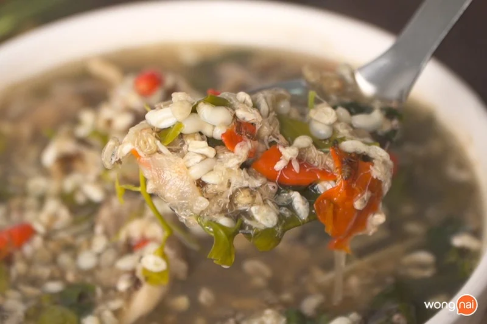

วิธีทำ “แกงผักหวานไข่มดแดง” เมนูอาหารอีสานซดฮ้อน ๆ ตักไข่มดแดงเต็มช้อน
แซ่บจนต้องตบตัก! จัดไข่มดแดงเน้น ๆ ตักทีเต็มช้อน กับเมนู “แกงผัก
หวานไข่มดแดง” ที่มาพร้อมวิธีทำที่ทำตามได้ไม่ยาก พร้อมแล้วตามมาเข้าครัวกันโล้ดเด้อ!
ส่วนผสม แกงผักหวานไข่มดแดง
วัตถุดิบ
- 1. ไข่มดแดง 1 กิโลกรัม
- 2. ยอดผักหวาน 3 กำ
- 3. ใบแมงลัก 2 กำ
- 4. น้ำปลาร้า 3 ทัพพี
- 5. เนํ้าปลา 1 ทัพพี
- 6. น้ำเปล่า 3 ลิตร
- 7. พริกแดงจินดา 30 เม็ด
- 8. ตะไคร้หั่นท่อน 5 ต้น
- 9. หอมแดง 10 หัว
- 10. เกลือแกง 1 ช้อนโต๊ะ
วิธีทำ แกงผักหวานไข่มดแดง
STEP 1 : โขลกเครื่องแกง
นำพริกแดงจินดาใส่ลงในครก ตามด้วยหอมแดง
โขลกให้พอหยาบแล้วพักไว้ก่อนนำมาใส่ในแกง
STEP 2 : แกง
เมื่อเห็ดโคนลอยขึ้นให้ใส่เครื่องแกงลงไป

เมื่อน้ำเริ่มเดือดอีกครั้งใส่ไข่มดแดงและผักหวานลงไปคนให้เข้ากัน
STEP 3 : จัดเสิร์ฟ
ตักแกงผักหวานไข่มดแดงลงในถ้วย

พร้อมแซ่บ พร้อมนัวแล้วล่ะจ้า
มันแซ่บมันนัวมากเลยใช่ไหมคะ กับเมนู“แกงผักหวานไข่มดแดง” ที่จิ๋วหิวโซ
ได้พาเพื่อน ๆ ทำกันในวันนี้ หรือถ้าเพื่อน ๆ อยากทำเมนูอื่นล่ะก็จิ๋วขอแนะนำสูตรเมนู “ก้อยไข่มดแดง”
ให้ได้ลองทำตามกันที่บ้าน ทำแล้วอย่าลืมโพสต์รูปมาอวดกันด้วยนะคะ